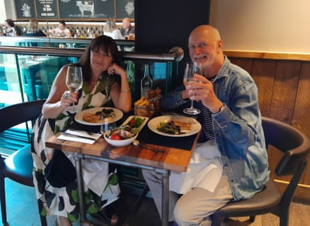

Andrew on Susan
What were you hoping for? To meet a lovely stranger, get to know them and hopefully find a connection.Plus a delicious meal.
First impressions? Susan was lovely, friendly and put me at ease.
What did you talk about? Our mutual interest in the theatre. Our varied employment histories and both being extras – I was impressed by her encounters with some well-known actors.
Most awkward moment? Going way back, she was a mod and I was a rocker, and we talked about that old rivalry. Although I’m not sure my Francis-Barnett 150cc motorcycle with a top speed of 45mph downhill really counts as me being a rocker.
Good table manners? Susan was punctual, and we shared a starter and the vegetable selection for our swordfish steaks.
Best thing about Susan? Her openness and zest for life.
Would you introduce Susan to your friends? Yes, she would get on well with them.
Describe Susan in three words Lovely, intelligent and punctual.
What do you think Susan made of you? That my conversation went off-piste a bit and I overshared for a first date. Otherwise, that I was an OK bloke!
Did you go on somewhere? We went to a bar, sat outside and chatted until Susan had to catch her train.
And … did you kiss? We agreed not to on a first date but had a good hug.
If you could change one thing about the evening, what would it be? Less rambling from me.
Marks out of 10? A definite 10.
Would you meet again? We talked about meeting again when she returns from a trip abroad.
Susan and Andrew on their date
Susan on Andrew
What were you hoping for? To meet a special someone.
First impressions? Lovely smile, very smart and well presented. And punctual – I appreciate that.
What did you talk about? Shared interests – mainly theatre. How our birthdays almost align. Studying as mature students. Keeping fit. Live music. Living abroad. And, of course, Brexit.
Most awkward moment? We were both immediately at ease.
Good table manners? Impeccable. We shared a starter and Andrew made sure we had equal amounts.
Best thing about Andrew? He was gentle, calm and seemed interested in what I had to say.
Would you introduce him to your friends? I certainly would as he was so easy to get along with.
Describe Andrew in three words. Warm, good listener.
What do you think Andrew made of you? I think he liked me as he complimented me several times, which was much appreciated. He may have thought I was a bit too assertive.
Did you go on somewhere? I had a train to catch so we strolled to the station and had time for a drink, enjoying the late sunshine.
And … did you kiss? No, just a quick friendly hug as I boarded the train.
If you could change one thing about the evening, what would it be? Nothing. We had a really nice time – great food, wine and company.
Marks out of 10? 9
Would you meet again? Well, there is a National Trust house we both want to see, so maybe.
Andrew and Susan ate at Buenasado in Reading. Fancy a blind date? Email blind.date@theguardian.com